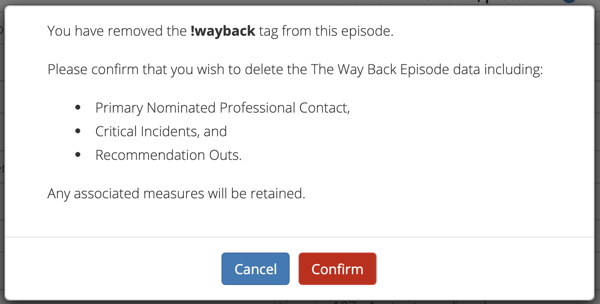
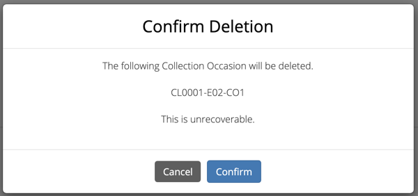
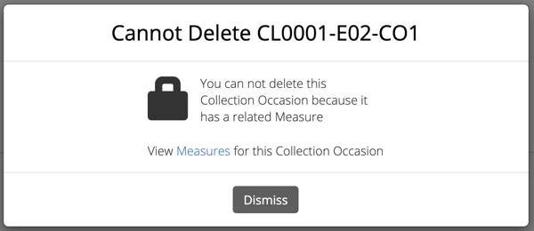
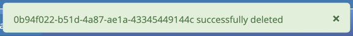

Data Entry¶
The Way Back (TWB) Support Service Minimum Data Set is an extension of the Primary Mental Health Care Minimum Data Set (PMHC MDS); current PMHC MDS Data online User Guide for Data Entry is available to be viewed at https://docs.pmhc-mds.com/user-documentation/data-entry.html.
PMHC Client Data¶
For more detail on how to search, find, view, add, edit or delete Client PMHC data in the PMHC MDS, please visit the PMHC User Guide at https://docs.pmhc-mds.com/user-documentation/data-entry.html#client-data.
PMHC Episodes¶
For more detail on how to find, view, add, edit or delete Client PMHC Episode data in the PMHC MDS, please visit the PMHC User Guide at https://docs.pmhc-mds.com/user-documentation/data-entry.html#episodes.
TWB-Episode¶
You can view a client’s episodes through Viewing a Client’s details available on the Data Entry tab, by following these steps:
Viewing a Client’s PMHC Episode¶
You can view a client’s TWB episodes through viewing a client’s details available on the Data Entry tab, by following these steps:
- Search for the client using one of the three search fields.

- Click on the Client Key in blue displayed within the table list.
- From the Client’s Summary tab, you can shortcut straight to an episode by clicking the Blue Episode Key displayed in the snapshot of the five most recent episodes.

- Alternately, if you would like to view all episodes you can click on the Episode Tab. The heading for this tab displays in brackets the total number of episodes recorded in the PMHC MDS for this client at Provider Organisations for which you have access.
A table will display all the Client’s Episodes at Provider Organisations for which you have access.
A Drop down list is available to view:
- All Episodes
- Currently Open Episodes
- Closed Episodes

To view the Client’s Episode details, click the Blue Episode Key.

A page will display the Client’s PMHC Episode details.
Adding a Client’s TWB Episode data¶
You can edit a Client’s PMHC Episode details through Viewing a Client’s PMHC Episode available on the Data Entry tab to add a Client’s TWB Episode data, by following these steps:
- Once Viewing a Client’s PMHC Episode.
- From the Client’s Episode table, click the Episode Key.
- Click Edit Details tab.
- Add
!waybackin the ‘Tags’ fields and press tab
5. Scroll to the bottom of the PMHC Episode Add the Client’s TWB Episode details. Mandatory fields are marked with an * . (Specification TWB Episode Data Elements)
You can also add the following information if available, or these can be added later: - See TWB-Critical Incident data specifications for Critical Incident Data. - See TWB-Recommendation Out data specifications for Recommendation Out Data.
- Click the blue ‘Save’ button. (If you decide not to add TWB data, you can simply navigate away from this screen)
You will receive confirmation that the Client’s Episode details have been saved, and it will now be displaying.
If you receive an error message, the data will need to be corrected before the record is saved and added to the PMHC MDS. See Validation Rules - TWB Episode
Editing a Client’s TWB-Episode data¶
You can edit a Client’s PMHC Episode details through Viewing a Client’s PMHC Episode available on the Data Entry tab, by following these steps:
- Once Viewing a Client’s PMHC Episode.
- From the Client’s Episode table, click the Episode Key.
- Click Edit Details tab.
- Scroll to the bottom of the PMHC Episode.
Update the Client’s TWB Episode details. Mandatory fields are marked with an * . (Specification TWB Episode Data Elements)
- Click the blue ‘Save’ button. (If you decide not to save changes, you can simply navigate away from this screen)
You will receive confirmation that the Client’s TWB Episode details have been saved, and it will now be displaying these new details in the Episode View Details tab.
If you receive an error message, the data will need to be corrected before the record is saved and added to the PMHC MDS. See Validation Rules - TWB Episode
Deleting an TWB Episode¶
Removing the !wayback tag will delete an TWB Episode, along with deleteing the .
- Once Viewing a Client’s PMHC Episode.
- From the Client’s Episode table, click the Episode Key.
- Click Edit Details tab.
- Click on the cross on the
!waybacktag will.
Click the blue ‘Save’ button.
Deleting the The Way Back Episode data will also delete the:
- Primary Nominated Professional Contact,
- Critical Incidents, and
- Recommendation Outs.
However any associated measures will be retained.
Please note: Once the collection occasion is deleted, you will not be able to recover this collection occasion data.
Click the red ‘Confirm’ button to delete the data. (If you decide not to delete the data, you can click the blue ‘Cancel’ button)

Collection Occasions¶
Viewing a Client’s Collection Occasions for an Episode¶
You can view a client’s collection occasions through Viewing a Client’s PMHC Episode available on the Data Entry tab, by following these steps:
- Once Viewing the Client’s Episode.
- Click the Episode Collection Occasions Tab. This tab displays in brackets the total number of collection occasions recorded in the PMHC MDS for this episode.
A table will display all the Collection Occasions linked to this Client’s Episode.

- To view the Collection Occasions details, click the Blue Collection Occasions Key.
A page will display the Collection Occasions details as recorded via the Collection Occasion Data Elements.
Adding an TWB Client’s Collection Occasions data¶
You can add a Client’s Collection Occasions through Viewing a Client’s Collection Occasions for an Episode available on the Data Entry tab, by following these steps:
- Once Viewing a Client’s Collection Occasions for an Episode.
- Firstly double check the Collection Occasions is not already showing.
- Click the Add New Collection Occasion tab.
- Enter the Client’s Collection Occasions details for the TWB episode. Mandatory fields are marked with an * . (Specification Collection Occasions Data Elements)
- Click the blue ‘Save’ button. (If you decide not to add this client’s episode, you can simply navigate away from this screen)
You will receive confirmation that the Client’s Collection Occasions details have been added, and it will now be displaying these new details in the View Collection Occasions Details tab.
If you receive an error message, the data will need to be corrected before the record is saved and added to the PMHC MDS.
Editing a Client’s Collection Occasions for an Episode¶
You can edit a Client’s Collection Occasions through Viewing a Client’s Collection Occasions for an Episode available on the Data Entry tab, by following these steps:
Once Viewing a Client’s Collection Occasions for an Episode.
Click the Collection Occasions Key.
Click Edit Details tab.
Update the Client’s Collection Occasions details. Mandatory fields are marked with an * .(Specification Collection Occasions Data Elements)
Please note: You can edit the Collection Occasion Key from this screen. See Editing a Collection Occasion Key.
Click the blue ‘Save’ button. (If you decide not to save changes, you can simply navigate away from this screen)
You will receive confirmation that the Client’s Collection Occasions details have been saved, and it will now be displaying these new details in the View Collection Occasions Details tab.
If you receive an error message, the data will need to be corrected before the record is saved and added to the PMHC MDS.
Editing a Collection Occasion Key¶
You can edit an collection occasion’s identification key through Viewing a Client’s PMHC Episode available on the Data Entry tab, by following these steps:
In step four when Editing a Client’s Collection Occasions for an Episode.
From the Collection Occasion Edit Details tab, click the ‘Edit Key’ button.
Type in the new collection occasion key and click ‘Next’.
Double check the new key is correct and click save. (If it is incorrect, click back to re-enter the key or click the ‘cross’ in the top right to cancel this key change request)
You will receive confirmation that the Collection Occasion’s key has been saved, and the screen will now be displaying the updated collection occasion key details in the Collection Occasions View Details tab.
Deleting a Collection Occasion¶
You can delete a Client’s Collection Occasions through ‘Viewing a Client’s Collection Occasions for an Episode’ available on the Data Entry tab, by following these steps:
- Once Viewing a Client’s Collection Occasions for an Episode.
- Click the Collection Occasions Key.
- Click the red ‘Delete’ button.
- You will either be displayed a Confirm Delete screen or a Cannot Delete screen
Confirm Delete¶
Please note: Once the collection occasion is deleted, you will not be able to recover this collection occasion data.
Click the blue ‘Confirm’ button to delete this collection occasion. (or click the orange ‘Cancel’ button if you decide not to delete this collection occasion data)
After you click Confirm, you will receive confirmation that the episode has been deleted, and you will be redirected to View Episodes where the episode will no longer be displayed.
Cannot Delete¶
If the collection occasion you are trying to delete has any measures, you will not be able to proceed with deleting this collection occasion until all the related records have been deleted.
You can click on the link provided to view the client’s measures for this collection occasion, or click the orange Dismiss button

Collection Occasion Measures¶
Viewing a Client’s Collection Occasion Measures for an Episode¶
You can view a Client’s Measures added to a Collection Occasions through Viewing a Client’s Collection Occasions for an Episode available on the Data Entry tab, by following these steps:
- Once Viewing the Collection Occasion.
- Scroll down to the Measures
A table will display all the Measures linked to this Client’s Episode Collection Occasion.
- To view the Measure details, click the Blue Measure Key.
A page will display the Collection Occasions details as recorded via the Collection Occasion Data Elements.
Adding an Client’s Collection Occasion Measures data¶
You can add a Client’s Measure for a Collection Occasions through Viewing a Client’s Collection Occasions for an Episode available on the Data Entry tab, by following these steps:
- Once Viewing a Client’s Collection Occasions for an Episode.
- Firstly double check the measure is not already showing.
- Click the Add New Measure tab.
- Select the Collection Occassion Measure type.
- Choose the Score Type, if it isn’t already pre-filled.
- Click the blue ‘Next’ button.
- Enter the Client’s Measure details for the Collection Occassion. Mandatory fields are marked with an * .
- See TWB-Plan data specifications for Plan Data.
- See TWB-NI data specifications for Needs Identification Data.
- See K10+ Measure data specifications.
- See WHO-5 Measure data specifications.
- See SIDAS Measure data specifications.
- See Service Contact data specifications for Service Contact Data.
- Click the blue ‘Save’ button. (If you decide not to add this client’s measure, you can simply navigate away from this screen)
You will receive confirmation that the Client’s Measure details have been added, and it will now be displaying these new details in the View Measure tab.
If you receive an error message, the data will need to be corrected before the record is saved and added to the PMHC MDS.
Editing a Client’s Measures for a Collection Occasion¶
You can edit a Client’s Measure for a Collection Occasions through Viewing a Client’s Collection Occasions for an Episode available on the Data Entry tab, by following these steps:
- Once Viewing a Client’s Collection Occasions for an Episode.
- Scroll down to the Measures
- Click the Blue Measure Key.
- Click Edit Measure
- Update the Client’s Measure details. Mandatory fields are marked with an * .
Please note: You can edit the Measure Key from this screen. See Editing a Measure Key.
- Click the blue ‘Save’ button. (If you decide not to save changes, you can simply navigate away from this screen)
You will receive confirmation that the Client’s Collection Occasions details have been saved, and it will now be displaying these new details in the View Collection Occasions Details tab.
If you receive an error message, the data will need to be corrected before the record is saved and added to the PMHC MDS.
Editing a Measure Key¶
You can edit an measure’s identification key through Viewing a Client’s Collection Occasions for an Episode available on the Data Entry tab, by following these steps:
In step four when Editing a Client’s Measures for a Collection Occasion.
From the Collection Occasion Edit Details tab, click the ‘Edit Key’ button.
Type in the new collection occasion key and click ‘Next’.
Double check the new key is correct and click save. (If it is incorrect, click back to re-enter the key or click the ‘cross’ in the top right to cancel this key change request)
You will receive confirmation that the Collection Occasion’s key has been saved, and the screen will now be displaying the updated collection occasion key details in the Collection Occasions View Details tab.
Deleting a Measure from a Collection Occasion¶
You can delete a Client’s Measure from a Collection Occasion through ‘Viewing a Client’s Collection Occasion Measures for an Episode’ available on the Data Entry tab, by following these steps:
- Once Viewing a Client’s Collection Occasions for an Episode.
- Scroll down to the Measures
- Click the Blue Measure Key.
- Click Edit Measure
- Click the red ‘Delete’ button.
- You will be displayed a ‘Confirm Deletion’ screen.
Please note: Once the collection occasion is deleted, you will not be able to recover this collection occasion data.
- Click the blue ‘Confirm’ button to delete this collection occasion. (or click the orange ‘Cancel’ button if you decide not to delete this collection occasion data)
After you click ‘Confirm’, you will receive confirmation that the collection occasion has been deleted, and you will be redirected to the View Collection Occasions where the collection occasion will no longer be displayed.
